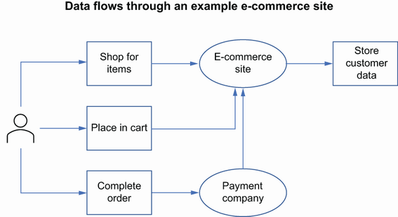
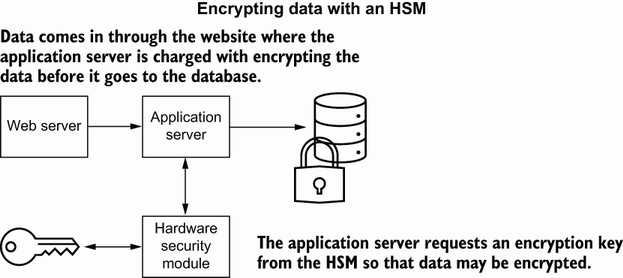
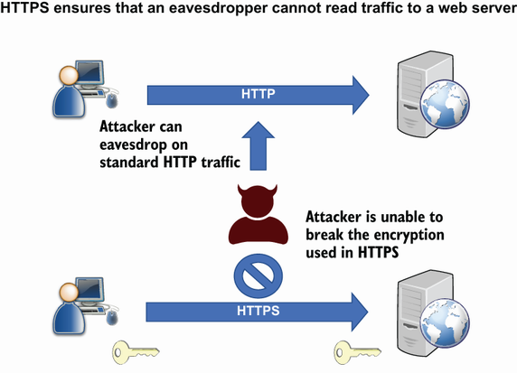
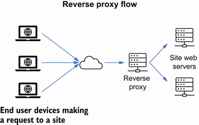
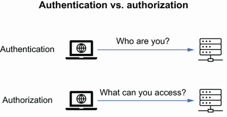
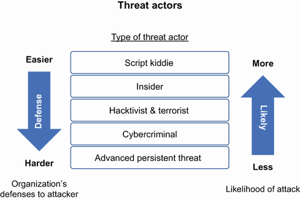

1 Why we need application security
3 Components of application security
Defining the security tenants that software must adhere to
Identifying and understanding risk that impacts software
Exploring security in the software development life cycle
In the previous chapter, I used the example of building a house without the locks on the doors and windows. A house is a great example, as it allows you to think about the controls you use to limit your risk of the house being compromised due to break-in, fire, flooding, and so forth. We spend most of our time in security attempting to limit risk and counter threats, not eliminate them. A risk is the potential for loss of an asset or damage to an asset, whereas a threat is the activity that takes advantage of a weakness in an asset. Risk and threats can never be eliminated. Similar to a house, we can’t eliminate the risk of fire, flood, or a break-in; we can only detect and respond while attempting to limit the risk and impact. To be clear, risk can never be eliminated, only reduced.
NOTE In the case of a house fire, the fire is the threat, while the house burning down is the risk.
Whereas fire, flood, and break-in are risks that impact a house, our software has a different set of threats and risks. These range from the physical to the digital. Yes, physical threats exist that impact our software; a flood in a data center would be a physical risk to our running application.
In this chapter we will not dive into the various specific methods of protection, but rather outline the different places where our software and data need to be protected and some best practices to look out for.
There are three basic tenets in security that all protection mechanisms that we integrate into our systems and software will come back to. It’s commonly referred to as the CIA triad—confidentiality, integrity, and availability.
Confidentiality—Protect data and allow only those who should have access.
Integrity—Data is known to be correct and trusted.
Availability—Systems and data should be available when requested by a trusted entity.
Most people in the security field are pretty familiar with these concepts, but I will provide further definition here to provide common ground for future topics in this book.
Perhaps the most important security design consideration you can make when developing software is confidentiality, where you are designing the software to provide optimal protection of data. The reality is that this is much more difficult than it sounds. As I mentioned, data is the new commodity. This means that it is everywhere. Software may be processing data that it is not the custodian of.
Note Data custodians are responsible for the collection, processing, storage, and implementation of business rules related to the data.
Some data is transient, some data is not persistent in a system and resides in memory for only a period of time. Figure 2.1 uses a simple data flow diagram (DFD) to show you how data moves through your system and others.

Figure 2.1 A basic data flow diagram (DFD) for purchasing online
As you can see in figure 2.1, once the customer completes an order, a series of other processes will coordinate with the payment company, process the order, and store the data. At each point, the protection of that data is paramount, especially if it is sensitive data like payment information. Today, we have methods to protect this information, primarily through encryption at rest when it resides in a database or other system, encryption in transit as it moves over the network, and encryption in use as it is processed in memory. These methods allow us to provide some protection of data as it traverses our systems, and in some cases even the services that your software sends data to.
The first step an organization needs to take to maintain data protection is to create and maintain a policy that clearly outlines what data must be encrypted. Most organizations will call this their data protection policy and will define what data needs to be protected but will not get into the how, aside from a high-level direction. The data defined in this policy will follow the organization’s data classification scheme (more on that later) and call out that data must be encrypted, and access is limited to only required personnel. Most policies will additionally include the following:
Clear definition of what must be done at each location that data can reside, such as file system, end user devices, databases, and others
Definition of the encryption key life cycle such as creation, distribution, and destruction
Definition of algorithms for hashing and encryption
Auditing of access to encryption keys
Once this policy is established, the organization can get to the business of mapping encryption standards and architecture to this policy but must give thought to two primary considerations when developing these standards and architecture:
Although encryption provides extra protection, there is additional time that is incurred when you need to access a key, encrypt data, and send it on its way. This latency is usually measured in milliseconds, but for critical applications, this additional time needs to be considered.
The system must also ensure that it is resilient enough to be able to overcome an outage that may occur due to the encryption keys being unavailable, or a failure in the encryption or decryption process such as the cryptographic service being offline.
This adds an additional layer of operational complexity and potential exposure to an availability issue and must be considered.
One of the first steps to protecting data at rest is to recognize that you have a problem—a data inventory problem. Put simply, data inventory is the ability to know where data is located in an organization. During a security incident, an organization needs to be able to know what data may have been compromised and whether there is a risk related to the data that was compromised. Is it critical client information that was on that database that was just breached? If this can’t be answered, then there is a gap in understanding where the data is and what the nature of that data is. Review figure 2.1 again: Do you know what is happening to that information that is passed between your application and the payment company? Do you know whether they are sharing data with others, knowingly or not? Do you or the consumers of your application have a policy that disallows developers to copy data from a production environment to a lower environment? If so, is it enforced?
These examples are not intended to frighten, but to bring awareness to the fact that data is everywhere and that the first step in securing this data is to get an inventory. For smaller organizations, this can be done by keeping a catalog of data, location, and classification in a spreadsheet or database. More on classification in a bit.
For larger organizations, a tool may be more appropriate that can actively scan for data, classify it based on the organization’s rules, and provide reporting and dashboards to track the organization’s overall data. However, regardless of how you identify your data, there are still fundamental steps in order to have a robust data inventory, including the following:
1.Create an inventory using an automated tool or the manual process described previously.
2.Data inventory needs to include all data, structured and unstructured, across on-premises, cloud, and third-party locations.
3.De-duplicate the data and ensure accuracy.
4.Ensure that the inventory is maintained and kept up-to-date through the tools and processes used to initially gather the data.
Although there are tools available to assist with collecting a data inventory, creating this inventory is more of an organization and process problem than a technology problem. In lieu of a tool, one method is through surveys or questionnaires that are used to determine the type, classification, and location of the data. These questionnaires are simple in nature and should be completed by the data custodian who is responsible for the technical implementation and maintenance of data within the system. Each organization should create its own survey that attempts to determine the type of data that is moving through the system and should focus on the sensitivity of the data that aligns to the classification that the organization uses. They are also responsible for ensuring that this survey is kept up-to-date as the architecture changes and can incorporate that update during the development process. A sample of what a questionnaire might contains follows.
If your organization is like many large organizations today, there will be a data lake or data warehouse that is a single location for most of your structured and unstructured data that all of the organization’s applications can leverage. This certainly makes things much easier when attempting to locate and classify data considering that it is centralized and easier to apply tooling or processes to collect where sensitive data is located. In fact, many cloud providers offer the ability to automatically identify and classify data through the services they offer in their ecosystem.
Note Macie is a service offered by Amazon Web Services (AWS) that uses techniques like machine learning and artificial learning to detect sensitive data in AWS. Currently it has some limitations on where it can find data within its services, but this is expected to improve over time.
However, there will always be legacy systems that are disconnected from the data lake and applications that need to maintain local copies of data in order to operate. It is hard to imagine any large organization having their data exclusively in a central location. This means that the organization will still have to rely on questionnaires or on-premises tools to locate and classify data.
Regardless of how an organization inventories data, it then needs to classify it. This allows the organization to provide the appropriate level of protection based on the classification of the data. Although it varies depending on the industry and needs, most organizations will have four ways that they classify data (table 2.1).
Table 2.1 Basic data classification in most organizations
Having this level of classification allows the organization to apply, broadly, encryption methods based on the classification. For instance, the organization may require that all confidential data be encrypted at rest and in transit and that all restricted data be shared only with a small audience of people in the organization with a need to know.
So, you’ve identified where your data is located, and you’ve used the methods described previously to classify it. Now what?
We will talk more about encryption as we progress, but a simple way to think about it is the ability to change plain text to cipher text through an algorithm with an encryption key. One main point to remember is that encryption is reversible so that either the same key or a paired key will be able to decrypt. This is by no means a book on encryption. Trust me, I can’t explain it like a cryptographer. However, one of the preeminent books on encryption as it applies to engineering is Bruce Schneier’s Applied Cryptography (Wiley, 1996). If you are looking for some more basic information regarding encryption, look at the Wikipedia page on encryption, which follows the history, future, and uses of encryption (https://en.wikipedia.org/wiki/Encryption).
To encrypt properly, you need a few things. You need an encryption and decryption key (sometimes the same key), a secure method to create an encryption key, a secure location to store the key, and a way to distribute and access the key in a programmatic way. Depending on the architecture and deployment of your application, the ability to securely generate and store a key may be limited. Most legacy systems are limited in their ability to store an encryption and decryption key. The key or keys are often stored in a configuration file, or worse, hardcoded in software. More modern architectures will take advantage of a hardware security module (HSM) that allows the application to make secure API calls to a physical device that stores encryption keys and can be configured to auto expire, rotate, and generate keys as shown in figure 2.2. Today, many organizations are under regulatory or contractual obligations to provide better encryption methods such as the use of an HSM to encrypt sensitive data and even allow for their customers to manage their own keys. However, although an HSM will provide the highest level of secure access to data encryption and decryption keys, they are expensive and can be a single point of failure if the hardware becomes unavailable. There are cloud HSMs that are available that can reduce the need for the organization to maintain expensive hardware, but be aware that prices can vary and can increase as you add more encryption keys under management.

Figure 2.2 HSM in a simple workflow to encrypt a database
Go through the assignment on symmetric encryption and get familiar with the way a single key can be used to encrypt and decrypt data (http://mng.bz/yvlB).You should also go through the assignment on public key encryption to get familiar with key generation, as well as encryption and decryption using a key pair (http://mng.bz/M5NW).
Depending on your organization and the industry you are in, you will most likely have to encrypt at least restricted and confidential data. For instance, in financial organizations, datasets that contain account numbers, social security numbers, and similar data will have to be encrypted based on compliance requirements. In the health care industry, you will have to encrypt insurance information and patient record information. One of the considerations for these organization is that information could be located outside of a database and could instead be in unstructured data like text documents, PDFs, or image files. For instance, a printed form from your doctor’s office may have your social security number and would be scanned and uploaded to a health information exchange (HIE). Organizations have a few options when dealing with structured and unstructured data encryption:
Full-disk encryption to provide encryption of the disk that the data sits on. However, this does not give you more granular encryption at the file level.
File-level encryption that encrypts the individual files that hold sensitive information like confidential and restricted data.
Column- or row-level encryption that encrypts a set of data in a database like the social security number or account number column.
Proper application of encryption is not as easy as waving a wand. Based on the location of the data, the ability to encrypt might be limited or infeasible. Legacy systems often struggle to access more modern encryption technology like HSMs. However, the organization needs to constantly consider what might occur if data is exposed. This can happen physically when a database drive is improperly disposed of and falls into the wrong hands, or digitally through an insider or malicious activity that is able to access the data in the database through the system. Some examples of data escaping the organization are
Improper destruction or retirement of old drives that contain sensitive data
An insider of the organization having access to the database through improper access management
An attacker gaining access to the host where the application database resides
A developer copying data from a production database to their local environment or a lower test environment instead of using mock data that is more suited for these nonproduction environments
With the mind-set that the data in the organization could be exposed to an adversary at any time means that the organization has to ensure that they have applied the appropriate level of encryption based on the classification of the data. If the physical drive that the database is on or a device with access to the database falls into the wrong hands, does the organization have enough confidence that its security controls will work? Can an adversary or competitor access the data on that database, or has the organization applied the proper level of encryption so that it cannot be accessed?
In addition to proper encryption techniques, the organization needs to ensure that there are proper access controls around the data at rest and access controls to the keys that can encrypt and decrypt. If a user has access to the database management tools, they will most likely have access to view the plain text of the data in the database. Additionally, if a user has access to the encryption or decryption keys, they are also able to view this data or encrypt data as if they were a legitimate service. Traceability of these sensitive activities can be met by using tools that provide access to the privileged account while also providing auditing capability. Usually, the auditing within the tool is completed through screen activity captures, keystroke logging, and auto filling passwords so that it’s not accessible to the end user. In this scenario, an organization will know who performed sensitive activity and, more importantly, what they did while provided that access.
The job of protecting information would be much easier if we had to protect data only when it is sitting nice and still in a database or a filesystem. The reality is that data moves. In fact, the exchange of data is a way for organizations to make money. It’s how organizations gain competitive advantages. In short, data needs to be in motion in order to be profitable.
It wasn’t that long ago that most websites were using basic HTTP or FTP to transmit data. Using plain HTTP or FTP means that as the data moves from one location to another, it is in plain text and open to view by anyone who has access to see the traffic, as described in figure 2.3. Secure Sockets Layer (SSL) was the first attempt to bring encryption to data in transit, turning HTTP to HTTP over SSL (HTTPS). Although version 1.0 was never released due to security concerns, 2.0 was released in 1995. Since then, we have had many versions of SSL and then Transport Layer Security (TLS) replaced SSL. TLS is primarily used to protect HTTP and FTP traffic.

Prior to the time when everything was HTTPS, sites used the secure transit only during sensitive activities like login. Today, almost every website you go to is now TLS enabled, and you will be redirected to HTTPS if you attempt to go to a site with just HTTP. Several factors played into the adoption of TLS. The browsers played a large role in this as they began to mark sites “insecure” if they did not use TLS or even if they used a known weak version of TLS. Additionally, security over the years has become not just an obscure corner of an organization, but increasingly a concern for everyday users. Users may not know, or want to know, how TLS works. But they do want to know that when they input their credit card number into a website, that the number will be protected. Most users today are becoming accustomed to making sure that they see some version of a padlock or other indicator that the site they are on is using a secure connection.
Although the versions and ciphers associated with TLS often change as new vulnerabilities are discovered, TLS is easily enabled. This is completed through a simple configuration in the web server and a signed digital certificate from a trusted certificate authority (CA).
Definition A public and private key pair, also known as asymmetric key pair, is a set of digital keys that are used to encrypt and decrypt data. These keys are generated together, but one is intended to be kept secret and private, where the other is used publicly. They are used to encrypt and decrypt and to provide digital signatures.
A private and public key pair is generated on the web server. The private key is retained by the web server and, ideally, never leaves the server. The public key is used to create a certificate signing request (CSR) that is then passed to the CA to sign with their private key. The product of this is a public certificate that is used to show that the web server has control of their private key and has been verified by the CA (figure 2.4).

Figure 2.4 Generating a certificate for HTTPS using Entrust as the CA
Once this certificate is signed, it is used to announce to any user agent, like a web browser or command-line HTTP tool, that they can trust the web server. The user agent will look in its trust store and determine whether the certificate authority that signed the certificate can be trusted. If the certificate is signed by a well-known CA, the browser will already have a trust relationship and will accept that the web server is trusted. In some cases, if it is not a well-known CA, the user agent needs to establish the trust by placing the certificates in its trust store.
Certificate management is fun . . . said nobody ever. As you can tell, enabling TLS can be mostly simple, but there are operational costs. Similar to the key management problems discussed earlier, certificates have a life cycle and need to be renewed or replaced periodically. Additionally, some of the fundamental underpinnings of the technology can occasionally change and lead to the need to make drastic changes. In fact, in 2016, browsers began to display security warnings for certificates that were generated using the SHA-1 hashing algorithm with users being able to click through the message and continue to the site. By the end of 2018, browsers like Chrome were alerting users that they would disallow access to sites using the less secure SHA-1 at the beginning of 2019.
I had the pleasure of leading a project at a large organization with the directive to update all the certificates we had to SHA-2. This was no small task. Identifying all the use cases where these certifications were used—like single sign-on SAML certificates, TLS, FTP, digital signing, and others—was difficult. Additionally, locating where these certificates were stored was a further complication. They are found on filesystems, key stores, web servers, and databases. Changing them without creating an outage required tight coordination between the development, security, client, and operational teams. Inevitably, there were rollbacks when something did not go as planned.
Never fear, though, as with encryption keys, there are tools that can be used to manage, rotate, issue, and alert on the expiration of certificates. There are also protocols such as the Automated Certificate Management Environment (ACME) that can be used to create CSRs and manage keys and certificates. It is part of the business model for Let’s Encrypt certificate authority, which allows them to issue certificates quickly and efficiently and provide short expirations of around 90 days. This short expiration date provides the ability for web servers to frequently change certificates and reduce the amount of time that a certificate is in circulation. Not that long ago, certificates would have an expiration of 5, 10, or even 30 years. For the sake of security, the industry has begun moving away from this practice and is looking for much shorter time frames to provide better security. This works effectively only if there is automation in place to make the rotation of expired certificates a smooth process.
A method for ensuring that data is secure when sending between two organizations or two applications in an organization is to encrypt locally before sending the data. This does require the two parties to have either a shared encryption key that they have already determined or to use a key pair that allows one party to encrypt and the other to decrypt. The data will be transferred between the two entities and is protected regardless of whether it is transmitted over a nonsecure channel like HTTP. However, you still have a dependency on the key management. Transmitting the key opens each end to a possible compromise. Another consideration is if the key is compromised, there needs to be another exchange and rekeying effort by both entities.
PGP (pretty good privacy) is a well-known tool developed in 1991 that is used to provide encryption prior to transmission. It is now an encryption standard called OpenPGP and can be used for email and file transmission. PGP can use either a single encryption key or a private and public key pair. The latter offers the ability for two entities to send information to each other even if they never met or don’t have the means to exchange a single key.
While encryption in transit and rest get a lot of attention when it comes to protecting data, doing this for data in use is much more complex. Protection of data in use means when it is being accessed in nonpersistent states like memory or in the CPU. Additionally, this means that data is protected throughout its entire life cycle when combined with encryption of data at rest and transit. In general, well-designed systems will ensure that access to data in use is only accessible to the parts of the system that should have access. This will limit access to memory by malware and other processes. This should protect against not just writing and reading, but also executing of code when not allowed.
Many of the methods for protection are through the host level or operating system level controls like using segmentation, protection rings, or paged virtual memory. Additionally, address space layout randomization is set at the operating system level where memory is randomized to limit the ability of malicious activity from finding specific addresses to jump to.
Enclaves can be used at the system level that ensure the data in use is encrypted and available to the CPU or CPU cache only at read time, but at all other times it is encrypted and not readable to any other parts of the system. One other protection method worth mentioning is the ability for the CPU to manage encryption keys in a register as opposed to the keys being stored in RAM. This makes the window of opportunity smaller for an attacker or malicious code to access encryption keys.
Hardly a day goes by where a breach or some type of cyber event occurs. A breach of confidentiality means that the data that was intended to stay confidential or restricted was released unintentionally. This can occur through malicious activity or accidental release.
Email is a quick and efficient method of leaking data. While information contained in an email can be concerning, it’s also important to know that by most standards, an email address alone is considered PII. In February of 2020, the father of UK prime minister Boris Johnson caused a bit of an international stir when he accidentally copied the BBC on an email to British officials regarding the lack of contact between Boris Johnson and the Chinese state over the 2019 Novel Coronavirus (COVID-19) outbreak. Later that year, Australia’s Department of Foreign Affairs and Trade exposed 1,000 citizens’ personal data when an employee failed to use BCC to send information regarding emergency loans and reentry quotas for citizens stuck in other countries due to COVID-19 restrictions.
However, where email is an excellent avenue for leaking information, it tends to be smaller than the big breaches. In May of 2021, the company Peloton, which makes connected exercise equipment and is most famous for its high-end stationary bicycles, had to release a statement regarding an application program interface (API) that allowed anyone to pull private data from Peloton’s servers, even if the user’s profile was set to private. This API allowed unauthenticated access, meaning that you did not have to have an account or special access. Peloton initially only limited access to the API to users with a Peloton account; however, this only limited the audience, and anyone could sign up for a Peloton account and access the API to gather the personal information of other users. Eventually Peloton fully corrected the authentication issue, but they were not able to confirm or deny whether their over 3 million users had their data accessed or stolen due to the issue.
You may be familiar with Marie Kondo, who is famous for her show on Netflix called Tidying Up with Marie Kondo. She uses the KonMari Method to identify things that you should keep and things you should get rid of. Often, she asks the question: “Does this spark joy?” What does this have to do with security and specifically data security? One of the first things I usually ask when I get involved with reviewing security decisions and architecture that involves sensitive data is whether the data needs to actually be collected and retained. If you don’t need to keep it or act upon it, then you don’t need to worry about securing it. To be clear, securing it means more cost and effort. Something that not many product owners will be willing to spend if they don’t need the data. Therefore, limiting the collection of this sensitive data is the best way to secure it. However, organizations and application development teams will err on the side of collecting more data because you may need it at some time, and storage is cheap.
Here are some questions that you need to ask regarding data:
Do you need to store that data?
Do you have regulations or contracts that require to maintain the data?
Can you properly classify this data?
Can you provide the appropriate level of protection for the collected data?
Do you know when you no longer need it and can destroy it?
If you can answer these questions in the affirmative, then you are on the right path. If not, then follow the previous recommendations of classifying, inventorying, and encrypting the data.
If you currently work on a development team or on a team that collects data, take a look at the database schema to identify at least one set of data, like a column in the database that contains sensitive information. Ask yourself or your team whether the data that is being collected is imperative to the operation of the application and whether or not having the data would impact the application. The answer might be yes—in fact, odds are it will be yes—but asking these questions regularly will get you into the habit of questioning whether you need to retain sensitive information.
Confidentiality takes the limelight when it comes to the CIA triad primarily because you can get the biggest bang for your buck by properly encrypting data. Availability sounds like something that is more for IT operations or site reliability engineering (SRE), which are primarily concerned with the uptime of the systems. The reality is that availability can be critical for applications where being down can be a matter of life and death. It’s not hard to imagine scenarios where this is evident. Hospitals, emergency services, critical infrastructure, and so forth have high demands for uptime.
Not all uptime demands are for public safety. Organizations that are solely an online retailer stand to lose money should their systems be unavailable. In early 2021, Amazon was taking in roughly $830,000 per minute. It’s pretty clear that an outage at Amazon would cost the company millions of dollars, depending on how long it persisted.
You may not be running Amazon or a hospital, but make no mistake that application uptime is still important for the organization and does have a financial impact. Organizations regularly report on their uptime, and it is a critical metric that needs to be met. Most organizations have contractual obligations that require them to meet service level agreements (SLAs) or penalties will be incurred, usually in the form of monetary compensation to the clients.
Most people think of one thing when they hear about attacks that bring down a service or application. DoS, or denial of service, is an attack that purposely floods the service or application with a large number of requests. Its bigger brother is the DDoS, or distributed denial of service, where the requests are from many different sources instead of just one in the DoS model. The system is then overwhelmed and is unable to complete requests for other legitimate traffic. One of the greatest complications with protecting against DDoS attacks is that the traffic often looks legitimate, which makes the job of blocking this traffic difficult.
There is an old American television show called I Love Lucy. One of the most iconic episodes is when Lucy and her friend Ethel worked in a candy factory to make some money. They were assigned to the candy wrapping station where candy would pass by on a conveyor belt and the two would have to wrap each one. Naturally, at first the conveyor belt moved along at a reasonable pace, and the two friends were able to successfully wrap each piece of candy that went by. Soon the belt began to move much quicker, and with more candy. The two friends were quickly overwhelmed and began to stuff candy in their pockets and mouths while missing most of the candy that went by.
This is a simple example of a DoS attack, where the system can be tricked into accepting what appears to be normal traffic, at high volume, by a malicious actor. In other words, the candy coming down the belt is still legitimate and should be there, but the system setup to properly handle that candy is unable to handle the large amount being sent. Now, in this example, it’s easy to laugh it off because it’s a simple yet visually accurate example of a denial of service. In the real world, these attacks can be dire. Increasingly over the years these attacks have also grown in size. Early DDoS attacks were small in size and would use something like a SYN flood that would send a large number of TCP synchronize (SYN) packets without closing them out. It was simple, yet effective. More importantly, almost anyone could do this. Attacks today are much more sophisticated and larger, reaching over 2 terabits per second in some cases. To put that into perspective, that is 1,000,000,000,000 bits per second, or roughly 1,000 hours’ worth of movies.
DDoS attacks are not limited to just network-level attacks. Layer 7, or application layer attacks, are common as well. These types of attacks are generally smaller in nature as they are targeted at disrupting the flow of the application or processing of data by going after the specific resources that serve up the application. This could be by targeting the database to make it unavailable or flooding the application with HTTP traffic that keeps it from processing legitimate requests from users.
Not all availability issues are due to malicious activity. If the application is not built to be resilient, it is possible that something as benign as a software update could bring down an application. Other possible actions are system reboots, patches, or failed software installations. Most organizations will perform system maintenance during times where the client impact is low.
In 2019, while Britain was moving toward an exit from the European Union, many citizens of Britain who wanted to remain in the European Union attempted to sign a petition on the UK’s Parliament website. The sudden spike in traffic that was unusual for the site presented many of the citizens with an HTTP 502 error signifying that the site was incapable of handling the large number of requests.
There are also cases where the protection mechanisms in use can create their own availability issues. Akamai is one of the leading companies in DDoS protection. They offer a content delivery network (CDN) that includes protection for many companies against volumetric-type attacks like DDoS. In June of 2021, an outage at Akamai led to several sites around the world becoming unavailable. Most were financial institutions in Australia and New Zealand; however, both Southwest and American Airlines were impacted as well. The cause of the outage was not due to a cyberattack, but rather a misconfiguration at Akamai related to a routing table value. This came shortly after similar outages at some of Akamai’s rivals, Fastly and Cloudflare, showing that an overreliance on third parties to deliver protection can be an additional risk to an application.
Protecting against volumetric attacks that flood your network or application with legitimate or junk data is one thing, but an entirely different approach to availability chaos is by encrypting the devices or data that your application depends on. Ransomware is not new, but in the past few years it has gained popularity. We could spend an entire chapter on ransomware, but I’ll summarize it here.
Ransomware is the outcome of a successful malware attack with the sole intention of encrypting a device (locker ransomware) or the more popular method of encrypting data (crypto ransomware). The methods of delivery of the malware vary from phishing to more sophisticated remote code execution. So, what does this mean for your web application or service? Obviously, an encrypted database will render your application useless in most cases. Returning to normal operations will typically mean paying a ransom to the attackers in the form of anonymous cryptocurrency in order to gain access to a decryption key that will unlock the data. Mature organizations may be able to overcome this disruption by restoring from backups that have not been encrypted.
Ransomware has continued to rise in the past several years and has catapulted cybersecurity to the mainstream with such famous attacks like WannaCry, the City of Atlanta, the Port of San Diego, and the Colonial Pipeline attacks. With ransomware as a service (RaaS) on the rise and affiliate attackers reusing popular ransomware software, the trend will continue to go against organizations.
Ransomware is a persistent and growing threat to organizations. The idea of having your data encrypted with no method of decryption is paralyzing to think about. The Cybersecurity and Infrastructure Security Agency (CISA) has several recommendations to avoid the risks of ransomware:
Ensure that your organization has a procedure for patching software.
Back up data on a regular basis and test the backups.
Restrict access to systems and software following the principle of least privilege.
Not all organizations face DDoS attacks equally. Some, due to the nature of their business, face an increased risk. Imperva is a leading provider of application-layer DDoS protection through a suite of tools, including a web application firewall (WAF). Their Global DDoS Threat Landscape Report released in 2020 showed that the gaming industry and the gambling industry continue to be the most attacked websites on the internet. It is easy to see why this is the case. These sites need to be universally available especially during big events or risk losing revenue.
In 2020, an attacker used Datagram Congestion Control Protocol (DCCP) to slip past DDoS protections that are geared toward other network protocols like TCP and UDP in order to perpetrate one of the largest DDoS campaigns ever seen. They used the new attack vector to perform what is known as DDoS extortion or ransom. RDDoS (ransom DDoS) is, as it sounds, a way for the attacker to threaten an organization to either pay a fee or be the subject of a DDoS attack. By February of 2021, these attackers were able to muster over 800 Gbps of traffic to direct toward their victim—in this case, a gambling site in Europe.
Despite a global pandemic, the health care industry was still too juicy of a target for attackers to ignore. Many of the most well-known cybercriminal gangs (more on these later) claimed that they would avoid attacking health organizations to show their sensitive side. However, there are plenty of fish in the sea, as it were, that did not feel the same.
There were countless attacks and attempted attacks against health organizations during the COVID-19 pandemic. Both the HHS (Health and Human Services) in the United States and the Paris AP-HP were in the crosshairs of DDoS attacks. In the case of the HHS, the threatened DDoS attack whose aim it was to create disruption in the pandemic response was thwarted. However, the Paris AP-HP, which operates dozens of hospitals across France and provides research and disease prevention, was impacted by a DDoS attack that was absorbed by the network provider.
One thing that is clear with the targeting of health care organizations is that attackers will always go for the lowest hanging fruit, the least amount of effort, and the most likely to pay a fee. Health care organizations are not engineering organizations. Their primary purpose is to provide health care services to patients in need. Any disruption to their capabilities puts lives at risk, which will drive decisions to move quickly to a resolution. With technology that is usually years behind the state of the art, and small or outsourced technology teams, the quickest resolution is usually processing a payment to an attacker.
Availability has one best friend in the world, and that’s resiliency. One of the most iconic bridges in the world is San Francisco’s Golden Gate Bridge. Known as one of the Wonders of the Modern World, the Golden Gate Bridge connects the San Francisco Bay with the Pacific Ocean. Construction began in 1933 and was completed four years later. The Golden Gate Bridge is a great real-world example of building for resiliency. Not only was the construction of the bridge an extreme modern marvel, but there are also unique considerations for places like San Francisco, namely earthquakes. The Golden Gate Bridge is within close proximity to the San Andreas Fault, which produces frequent seismic activity, some of which can be devastating to the area. It has survived several large earthquakes over its 80-plus years of existence, but not without the need of constant review and rework. Several projects are ongoing to make it more secure against not only earthquakes but also high winds. What does this have to do with software? Risk management in architecture is not much different whether you are building a bridge across a peninsula or developing an application to deliver value to your customers. Architecture, design, and development all need to consider the what-if scenarios and plan for possible attacks, failures, or errors, some of which could be intentional.
Your application should be designed and architected in a way that takes into consideration the type of risks and threat actors that may be looking for weaknesses in your specific application. Similar to the Golden Gate Bridge needing to be built to withstand winds as well as potentially large earthquakes, a health care application needs to be built to withstand a cyberattack that is attempting to ransomware your client data in order to turn the downtime into a profit. Your gambling application must consider criminals looking to DDoS your application to extort your organization. Your critical infrastructure application must be prepared to handle an advanced persistent threat looking to shut down your system to cripple key parts of a nation. We will talk more about these in the next sections.
One of the simple methods of building in resiliency is to add more processing power. Scaling vertically means you are creating bigger systems. Scaling horizontally means you are adding more systems. This is easier said than done. However, the migration to cloud-first architecture makes this easier, albeit expensive. Additionally, building segmentation into your architecture reduces the “blast radius” of a potential attack. If you always assume that one of your systems is compromised, you will look at your architecture much differently. Similarly, there have been books written on the principles of chaos engineering, which in its simplest form means injecting a bit of chaos into a system to identify issues in order to prevent full-on outages. Think of trying to find a pinhole in a tire. You might rub some soapy water around it and put it under pressure to look for where the bubbles show. This is similar to the concept of chaos engineering where the team develops a hypothesis, tests it, and then works to fix what was discovered in the test:
Develop a hypothesis—The application will respond gracefully if an external service is not available.
Test the hypothesis—Route HTTP from the application to a nonexistent service and observe the failure condition.
Fix—If required, identify the issues, resolve them, and improve processes.
One last comment regarding building resiliency in. Things will break, processes will fail, systems will crash. What is done with that information is critical to improving the system long-term. Learning from mistakes and failures is the best method of building more resilient systems. A typical component of learning from failures is in a postmortem or a root cause analysis. Here, the team reviews what happened and where the failures were. From there they incorporate the findings into an action plan to ensure that controls, processes, and automation are in place to prevent the failures from occurring again.
When we open a bottle of our favorite beverage, we expect to hear the sound of the cap snapping away from the protective top. Data is little different in the sense that we want to have confidence that it is correct when we view or process it. Integrity is the ability to know that data is known to be good and trusted. This requires the application to trust that data has not been tampered with whether in transit or at rest. Integrity needs to be confirmed in communication between two applications, in databases or filesystems, or a piece of hardware or software. Anywhere data resides or moves requires it to continue to be trusted by the applications that use it.
As with availability and confidentiality, integrity issues can be intentional or accidental. It can be from an attacker injecting junk into a business process that corrupts data that is then stored or processed, or it can be a write failure that then corrupts those backups you were planning on using to recover from a potential ransomware attack.
Have you ever walked to your desk, got in your car, or entered a room in your house and noticed that something was moved that you know you didn’t move? Your mind begins to walk back over the last time you were in that space. Did you really put that pen there? Was that book always on that side of the table? If it wasn’t you, then who was it? If only you had a method to see who was in that room other than you and catch the perpetrator red-handed. I got news for you: It was probably you.
Think about a simple web request from your browser to a web server. The request leaves the browser in a GET or POST and traverses the network as a packet, which lands on several network devices. It is then received by a load balancer or proxy or a WAF, and it hits a web server, an application server, and a database. By the way, it’s most likely been logged in a few of those locations and sent to a separate, centralized logging system. Not all paths through a system are the same, but in general this holds true for most HTTP requests made today and can be as simple as the diagram in figure 2.5. At each one of those steps there is the potential for a user or an account to gain access to view, copy, or corrupt the data through intentional or unintentional manipulation.

Figure 2.5 Simple HTTP request with a reverse proxy
Access control and monitoring is primarily used to determine what accounts have had contact with data as it has gone through a system. It can be achieved through means as simple as providing a monitoring system for logging access to certain files, directories, and resources. Or it can be as complex as a privilege access management (PAM) system that requires a user to check out account access to sensitive systems where actions and keystrokes are logged. There are systems and security models in between that will provide varying level of access control. The key takeaway is to ensure that you can trace access, down to the individual file, to a physical person or user account. The moment that you have something like a shared account, you lose the ability to trace activity to a single account or individual. These accounts are ones that have a shared username and password that are used by a group of individuals.
Nonrepudiation is a form of access control that grants the application the ability to track an action or activity back to an identity. The most important concept with nonrepudiation and access control can be summarized by the FDA’s definition of an audit trail.
Definition An audit trail is a secure, computer-generated, timestamped electronic record that allows for reconstruction of the course of events relating to the creation, modification, or deletion of an electronic record.
Attackers may look for ways to ascribe their activity to a different account or otherwise pin the blame somewhere else. When an attacker performs an attack on an application, there is a goal in mind, perhaps data exfiltration or DoS. In these cases, they will also attempt to hide their activity through poisoning or corrupting the logs so that the team that reviews the incident is not able to piece together the attacker’s activity. It is important to validate the input that is coming into your logs and make sure that access to logging workflows is tightly controlled. It is also important that enough information is logged to aid in the forensics of a potential incident. Without this audit trail, the ability to trace behavior back to an entity will leave the organization unable to determine the root cause of activity.
Version control offers the opportunity for a team of software personnel to work on a large application. Rarely is an application developed by one individual. It takes a team to build an application that is developed for commercial use. The use of a version control system (VCS) allows for the team to work simultaneously on the same application while providing the means to track code check-ins, resolve conflicts, and enable the ability to revert changes.
Version control is also a method for making certain that if data is corrupted, that there is a means to return to a good state. For those of us who have done any software development, we know that there have been times that, while coding, we broke something else in the process. Or maybe that only happened to me. You would usually attempt to roll back to a known good state or at least be able to view an older file and compare it to the current so that you can determine what broke. Version control software performs the function of providing control and visibility into files over time. As mentioned, this provides the ability to compare and roll back in the event of data becoming corrupted or deleted, or if there was just bad coding.
Many newer VCS include the ability to perform code reviews, track defects, and leverage task controls that can perform jobs related to continuous integration like merging code, running test suites, and creating a software package that can then be deployed to an environment where it can be tested. In relation to software security, the VCS that is used allows for the application security team to perform code reviews on sensitive code. For instance, a change may have been made in the code that impacts the authentication of the application. In this case, the engineering team may request that the application security team review the code for any increased risk due to the change. Additionally, if the VCS provides the ability to run tasks, the application security team can use this point to perform automated security testing to uncover vulnerabilities, like using a static analysis tool.
An additional consideration when maintaining data integrity is to maintain the data as it is initially brought into your system through a user or service. In the application security space, we typically call this data scrubbing or validation.
NOTE If there is only one thing that you remember from this book, let it be the fact that you can never trust your end users or the services your application works with to send you correct data. Whether intentional or not, data that is not properly validated can lead to failures in your application or a malicious actor being able to compromise it.
This means simple concepts like only accepting numeric values of certain length when expecting a phone number or social security number. It can be as complex as writing regular expressions that look for specific characters and other requirements. Many development frameworks may even have data validation built into the framework. However, ultimately, the validation strategy should ensure that the input data is both within the constraints of the value it is expecting and also makes sense from a logic perspective.
Depending on your development framework, validation techniques are natively available and can be leveraged to check common constraints on size, type, schema, and others. One consideration when developing validation, either using the native elements of your framework or developing your own, is that taking the allowlist approach is more effective than the deny list. What this means is that the application should specify what it allows, and not what it blocks. It is apparent that a deny list will need constant maintenance and will not always catch novel approaches to circumventing the validation. An allowlist will only permit the values that the application is expecting to work with and is a more secure method.
One last point on the input validation is that it is not sufficient to examine the input only on the client side. This check must also be done at the server side. Proxy tools, and projects like cURL, allow an attacker to manipulate an input or send requests to your application without needing to go through the UI. In other words, most attackers will easily circumvent your client-side validations that might be in place.
Data replication is usually thought of, and incorrectly, as data backup. Data backup requires more than just replication, including testing and integrity checks. What replication does entail is making multiple copies of data in different locations to be able to absorb potential data loss or corruption in one copy. This provides not only better availability and lower latency but also the ability to restore to a known good state should something go wrong. Although there are file and system backups that should be in place, the application architecture should include the ability to distribute data through a clustered database. While in this scheme, data is split so that different fragments go to different nodes and are retrieved in a manner that will then consolidate the different fragments back to the original data. Replication of the data will provide the additional layer of making sure that a failure at one node does not limit the ability for the cluster to retrieve the data. There is one important caveat. Data replication can lead to the replication of bad data as well in the case where an attacker is able to corrupt the source that then gets replicated. It is critical to rely on a full backup strategy that does not depend on data replication exclusively.
If you have worked in technology long enough, you are well aware of the concept behind checksums. These are values that provide a fingerprint for a given input. This is essentially a hash of an input, which means that it can only be done in one direction as shown in figure 2.6. In other words, the plain text is turned into a hash value, but the hash cannot be returned to the plain text. Checksums and hashes are not necessarily different from each other except for their purposes. Where hashes are an output of a mathematical function that is intended to create a unique value, a checksum is used to make a comparison and then decide whether a value has changed or not.

Figure 2.6 Hash validation utility
Another example of a generated code that provides data integrity assurance is the message authentication code (MAC). These are cryptographic checksums that are used to prove that data has not been tampered while it was saved or transmitted, and to provide a means to authenticate who it came from when a cryptographic key is used during the MAC generation.
Authentication and authorization, as shown in figure 2.7, are two additional tenants that are vital to maintaining the security of an application. They are components of what is typically thought of more broadly as identity and access management (IAM). Diving deep on this topic is out of scope for this book, but it is important to know what they mean and their roles in security.

Figure 2.7 Authentication vs. authorization
Authentication (or AuthN) is the practice of confirming that a user or account is who they say they are. This is accomplished by proving identity through the following:
Username and password, which accounts for something you know
A token through either a hardware device or software, which is something you have
Biometrics like a fingerprint or retinal scan, which is known as something you are
In most cases, a single factor is enough to verify the account. Our username and password combination is widely used to allow us to log in to applications. More strict applications or services may require additional factors like token or biometrics (or all three) to provide enough verification of the account. The use of more than one factor is considered MFA (multifactor authentication). MFA is quickly becoming widely accepted as the minimum authentication for most applications, as the single-factor authentication is often easily circumvented. For instance, password combined with a token would be two factors that are used to provide authentication. It is important to point out that once an account has been authenticated, it does not grant access to everything within a system. That is an important distinction between authentication and authorization. Your ability to log in, and therefore authenticate, to a site like Amazon.com does not entitle you to access everything, including administrative functions.
Authorization (or AuthZ) is the process of granting access to a user or account to certain features or activity within an application. This occurs during or after the authentication process. It’s important to consider that during the authorization process, the least privilege approach is taken to ensure that the account has access only to the features that it needs to perform its tasks. That can be achieved through several access models:
MAC (mandatory access control)—Gives the access control to the owner and custodian of the system or data
RBAC (role-based access control)—Provides access based on the account’s participation in a group or role
DAC (discretionary access control)—Gives complete control of the access control to the owner of a system or data
Rule-based access control—Defines access for an account that is defined by the custodian or system administrator
One common way to think of authorization and its role in identity is the common access card, passport, or license. These types of identifying items usually have a photo, your name, address, and other identifying information. Having one of these helps someone confirm your identity since you are the person in the picture. This is authentication. However, having that identifying item doesn’t mean that you are granted access to certain locations. For instance, your license will not allow you access into sensitive areas of a military base. Sure, the picture and information on the license identifies you, but it by no means grants you access to off-limits areas.
One of the foundations to developing a defense-in-depth approach to addressing security is to know what types of attacks you should be expecting. The following is a popular quote that suits our needs here:
If you know the enemy and know yourself, you need not fear the result of a hundred battles.
If you know yourself but not the enemy, for every victory gained you will also suffer a defeat.
If you know neither the enemy nor yourself, you will succumb in every battle.
Of course, we are not headed to battle every day when we head off to work, but this still works in the context of cybersecurity. Knowing the attackers, their methods, and what their targets are in your organization allows you to know where to spend your effort and money. We’ll talk more about general risk next, but first let’s talk about who the various adversaries are that you will likely encounter.
One of the most prevalent adversaries that we can expect to see in the cybersecurity space is the “script kiddie.” It’s not a great name, but these are typically low-skill attackers who have little motivation outside of revenge or fame. They will look to purchase or reuse exploits that others have developed with no knowledge or understanding of how the exploit works. They simply want to point it to a target and click a button.
Although the skill level of these attackers is low, they are generally using automated-type attacks that allow them to run these attacks at scale. Make no mistake, organizations are under near constant, daily attacks. Some of this is noise from the general internet, and other activity is due to these adversaries who are just looking to test their skills or gain bragging rights with their friends. This type of motivation may make their attacks less impactful, but they are still widespread.
Botnets are a common attack tool used by script kiddies. This is a method used to perform DDoS attacks at scale. These networks of bots are compromised devices that have malicious code injected into them so that they may be used in a future attack. Most of the time they are used to target organizations for volumetric types of attacks like DDoS. They can be Internet of Things (IoT) devices, laptops, desktops, printers, or any other device that has an internet connection and can be used to make web calls. Some of these botnets are even for sale or can be rented for a period of time. For this type of attack, most organizations are not equipped to mitigate it themselves and need to look for outside help in the form of firewalls both at the application and at the network layer. Other controls require your organization to know the type of traffic that it is expecting to see and where it comes from so that the controls can be put in place to limit activity to just those known locations. This might require geofencing that limits traffic to known good countries or locations.
The insider threat is an often-overlooked category. These are users who usually have privileges to data and systems that outsiders would not. Think about the system administrator for your organization’s domain controller. Now that you have that person in your mind, think about that person being disgruntled. What about the back-office admin in a medical facility who has access to patient records? What if they are no longer “feeling” their job? These things do happen. Although it is fair to say that most insider leaks are accidental and not due to the activity of a malicious actor. An example is someone who leaves their laptop unlocked, opens a door for a stranger, or forwards an email accidentally to a wide audience. These actions are not considered malicious, but can leave an organization exposed to sensitive data leaks.
The numbers vary on insider threats since not everything is required to be reported. However, Ponemon Institute produced the “2020 Cost of Insider Threats: Global Report” that showed that criminal insiders accounted for around 23% of insider incidents and 14% were due to criminals posing as insiders. These types of attacks are usually thought of as a problem for the information security team to deal with, but keep in mind that software engineering teams not only have access to the organization’s intellectual property in the form of proprietary code, but also usually have elevated rights to environments that may have sensitive information.
The motivations for an insider can vary. As mentioned, some leaks at the hands of an insider are accidental. This is due to the lack of controls around access to information like a lack of proper segmentation or a least privilege model that enforces access to only those that need it. Controls should also be in place to guarantee that sensitive data and production data is not able to be moved from a production environment to another location. When motivation is to take revenge on the organization for a perceived slight, this becomes more complicated to defend. However, getting to a zero-trust type of model means that you should, unfortunately, suspect that anyone who has access to your most sensitive data is malicious and provide the appropriate auditing and protections around access to that data.
Depending on the industry that you are working in, cybercriminals may be the most worrisome. Most organizations that are in industries like financial or health care perhaps face the most difficult challenges when it comes to cybercriminals. There is one thing that motivates cybercriminals—money.
As mentioned, many times, data is the new oil. It’s a commodity, and organizations collect, trade, and monetize it. There is some folklore that attributes a comment to Willie Sutton, a famous bank robber in the 1900s. As the lore goes, Willie Sutton was once asked why he continues to rob banks. His famous reply supposedly is, “Because that’s where the money is.” Turns out that may not have been totally accurate according to Willie Sutton himself and was perhaps just an editor attempting to be pithy. Regardless, the statement is true and sums up, pretty well, why cybercriminals continue to target organizations and their data.
Their techniques vary: ransomware, DDoS, data exfiltration, or even physical theft of devices. The goal is to get to the data, put it on the black market, and make some quick money. Their technical abilities vary, but they are more adept at infiltrating an organization from the outside than the previously mentioned actors. They will use off-the-shelf or purchased tools, or they can go as far as developing and customizing their own exploits to target specific entities. They are more targeted in their approach and will look for low-hanging fruit in order to compromise an organization.
I don’t mean to lump hacktivist and terrorist in the same category since they have different goals, but they are both propelled by the desire to publicly make an example of someone or some organization in order to advance an agenda. For both actors, this tends to be of a political nature. But that’s where comparisons usually diverge.
Hacktivists will take up causes for people or movements aimed to effect change toward a shared goal. They are usually a loose band of individuals with a high level of skills. They will look to deface websites of organizations they don’t agree with or even DDoS them. Their goal is to raise awareness around a cause, and their methods will vary.
Cyberterrorists move beyond political motivations and will often take up religious or ideological causes and target organizations accordingly. The targets can be individuals or organizations, and will often look to target key infrastructure of nations with the intent of causing physical harm.
Advanced persistent threats, or APTs, are gaining more recognition recently as nations such as Russia, China, North Korea, Israel, and the United States find their cyber differences (putting it mildly) out in the public space. APTs are deep-pocketed, nation-backed entities whose sole intention is to gain tactical and strategic advantage over adversaries. This shows up in their effort to gain access to organizations in specific industries, critical infrastructure, military entities, and so forth. In most cases, the APT will lie in wait and stay hidden until an order comes.
As mentioned, these are deep-pocketed groups and are the highest skilled adversary that any organization will face. APTs are usually branches of an already established organization within the nation such as intelligence services or the military. Their focus is to gain a foothold into another nation with the intention of creating domestic chaos, take out military capability, or cripple a nation’s economy.
Defending against these types of attackers is not easy, and the best advice is often to do the basics of monitoring and protection. However, Rob Joyce, who led the National Security Agency’s (NSA) elite Tailored Access Group (whose purpose was to break into adversaries’ systems), summed up every organization’s nightmare during a conference in 2016:
We put the time in . . . to know [that network] better than the people who designed it and the people who are securing it. You know the technologies you intended to use in that network. We know the technologies that are actually in use in that network. Subtle difference. You’d be surprised about the things that are running on a network vs. the things that you think are supposed to be there.
It’s important to highlight the last statement here. Systems are complex, and in any large organization, the amount of applications and services running can be immense. Sophisticated attackers are counting on large organizations not having the bandwidth, personnel, or tools to detect malicious activity quickly. They’re often right.
Defending against these threat actors requires varying techniques and difficulty, as shown in figure 2.8. Organizations often find themselves as victims to broader geopolitical attacks that have nothing to do with them, especially when it comes to hacktivists, cyberterrorists, and APTs.

Figure 2.8 Relation of threat actors vs. defense
Knowing your adversary is key to survival. Knowing that script kiddies will largely use already identified, automated attacks means that your off-the-shelf tools used for scanning and protection will usually suffice. Defending against more sophisticated attackers like the hacktivist, cyberterrorist, cybercriminal, and APT means that your defenses need to be more robust, and a plan for business continuity is required in order to recover from a potential attack. For these types of attackers, you need to augment the preventative mindset to include detection and response. In other words, the more sophisticated the attacker is, the more resources are needed to defend. Regardless of the attacker, the basics of security need to be integrated. Scanning, patching, vulnerability management, visibility, and defense in depth are all required regardless of the threat actor.
This book is not about risk, though it is an integral part of secure software development. There are plenty of resources available to help organizations understand and balance their risk. The goal of this section is to highlight some of the concepts with risk as it relates to an organization. Understanding this relationship will help application owners know why certain controls are used and needed. This leads to a stronger defense-in-depth model. Without knowing the risks that are posed, you run the risk of overcorrecting for risks that are not of a legitimate concern.
As mentioned, there are many different methods for measuring risk. For the purpose of this book, we will use the OWASP methodology, aptly named the OWASP Risk Rating Methodology, which allows you to identify risks through a series of steps. It uses a number range from 0 to 9 to assign a value to a particular rating. The lower the number, the lower the level and vice versa. Although this is not a perfect system, the goal is to create a means for scoring security issues.
Throughout this book we will leverage many of the projects from OWASP. When it comes to application security, OWASP is generally the first stop for most application security professionals. It is an open source community of thought leaders who have built many of the foundational security practices used today. One of the most widely recognized application security projects is the OWASP Top Ten Web Application Security Risks. This documents the top ten most impactful security risks that a web application faces (https://owasp.org/).
Using the OWASP Risk Rating Methodology, the measured risk comes down to a simple equation:
The likelihood is calculated by asking questions related to the threat agent and the found vulnerability. More on this in a bit. The aim of these questions is to uncover how likely an exploitation of the found vulnerability may be. With the impact calculation, there are another eight questions that are geared toward identifying what will happen to the organization and technology should the exploit be successful. This will lead you to the ultimate rating of the risk, which allows you to prioritize and apply the appropriate controls to eliminate or mitigate the risk properly. Before diving into the risk rating methods with OWASP, it’s important to call out that once a risk has been rated, there are several things that an organization can then do with that information and that risk.
In general, there are three methods to managing an identified risk. The first is to remediate the risk. This requires the organization to take corrective action to fully implement risk elimination. An example would be a case where the application faces the risk of formjacking.
Definition Formjacking is an attack where an attacker is able to inject code that skims data from an HTML form. One of the most well-known types of formjacking is an attack called Magecart, which specifically targets checkout pages to steal users’ information by injecting malicious code in third-party supplied code to a website.
This is where an attacker is capable of taking over a form on a website that allows them to inject code that steals information. To remediate this risk, the organization will need to perform regular testing through tools and penetration tests to identify opportunity of code injection into the forms they use. They will monitor traffic and create an allowlist that allows only outbound traffic to known good locations. Additionally, they may look to leverage subresource integrity (SRI) tags to create a hash of content that is used by the application and fetched by the browser so that it can determine whether the content has been tampered with. They may even go as far as eliminating forms if they are no longer needed.
If remediation is not feasible for business or technology reasons, the next step is to identify ways to mitigate the risk by placing in compensating controls. This can also be considered reducing the risk since it may not completely eliminate it, but instead makes it less likely and raises the bar for an attacker. In most cases, mitigation involves using additional tools like a WAF or by reducing the size of the attack surface by limiting the audience down to as few accounts as possible and monitoring those accounts closely. Again, the goal of mitigation is not to eliminate, if this isn’t possible, but to reduce the attack surface to as small as possible.
The last option is to accept the open risk. This is a less-than-ideal option, as it means that the organization is aware of the risk but has chosen to leave it open and accept it. This should still be coupled with risk reduction so that the risk is as minimal as possible. A prime example of where risk is accepted is in the case of an older application that simply cannot be shut down. It may be due to the fact that the organization has been unsuccessful in getting clients to move to a new product or a new version of the given application, but whatever the case is, the organization requires the risk to remain open due to a business decision. In many cases, the acceptance of risk is taken when the impact to the business is low. In other words, the business is willing to accept a breach and knows that the total cost to the business would be low.
There are other facets of risk that can come into play such as cyber insurance and risk transfer. However, the purpose of this section is to cover the primary ways that organizations treat risk as it applies to the products and applications they create.
The first step in rating the criticality of a risk using the OWASP Risk Rating Methodology is to identify what the actual risk is to the application or organization. This could come through due to the nature of the organization, the type of application in use, or geopolitical factors. Risk is ever evolving and may even be eliminated by doing nothing, as both risk and technology changes.
This is where knowledge of your threat actors (adversaries), a well-documented architecture, and strong knowledge of how your application is deployed and used will come in handy. Identifying risk can come from conversations with the business and technical people within the organization, it can be made apparent by a client who reports a risk they identified, it can come from fellow industry partners, or it can come from your internal tools. Regardless of the method of risk identification, the most important part is to know you have risk.
In the OWASP Risk Rating Methodology, there are scores associated with each component. The higher the score, the higher the risk. When performing a risk rating, it is important to have the right resources involved with the measurement. This includes not just technical resources, but also business resources that understand what the impact to the business and organization would be for a given risk. Measuring of the risk can take anywhere from a few minutes to a few hours, depending on the resources involved and the complexity of the risk. It is also important to highlight that much of the risk rating is subjective, where, depending on the resources involved, it is easy to go down a rabbit hole on conversations over the risk. An example of this is where participants in the process may differ on their perception of the risk or aspects of the mitigations that are available. Key to success here is to lay out ground rules, have previous examples handy, and keep the participants on topic.
Likelihood is as simple as identifying when a risk may be exploited. We are all familiar with the statistics around driving a vehicle and the likelihood of a potential accident. Although many of us are aware of this risk, it doesn’t stop us from getting into our vehicles on a regular basis. It’s a risk we are willing to or need to take. The bottom line is that we never know when or even if an accident will occur on a commute to the office or another location; we simply know that statistically it may occur. Additionally, certain factors come in to play with this analogy. How fast we drive, other vehicles on the road, the safety of the route to our destination, and so on. The same applies with understanding the likelihood of a security risk. OWASP gives us eight factors for the threat actor and the vulnerability to help us measure the likelihood. The scores associated with each item is a weight that represents the impact of that item. This is used in the final calculation of the actual risk. The threat actor factors are
Skill level—How technically skilled is this group of threat agents? No technical skills (1), some technical skills (3), advanced computer user (5), network and programming skills (6), security penetration skills (9).
Motive—How motivated is this group of threat agents to find and exploit this vulnerability? Low or no reward (1), possible reward (4), high reward (9).
Opportunity—What resources and opportunities are required for this group of threat agents to find and exploit this vulnerability? Full access or expensive resources required (0), special access or resources required (4), some access or resources required (7), no access or resources required (9).
Size—How large is this group of threat agents? Developers (2), system administrators (2), intranet users (4), partners (5), authenticated users (6), anonymous internet users (9).
Ease of discovery—How easy is it for this group of threat agents to discover this vulnerability? Practically impossible (1), difficult (3), easy (7), automated tools available (9).
Ease of exploit—How easy is it for this group of threat agents to actually exploit this vulnerability? Theoretical (1), difficult (3), easy (5), automated tools available (9).
Awareness—How well known is this vulnerability to this group of threat agents? Unknown (1), hidden (4), obvious (6), public knowledge (9).
Intrusion detection—How likely is an exploit to be detected? Active detection in application (1), logged and reviewed (3), logged without review (8), not logged (9).
As you can see, the likelihood factors are looking at the threat actors as it relates to the vulnerability. The organization can then take this information to determine how likely a vulnerability is to be exploited based on the skill level and knowledge of the vulnerability.
Impact is a bit different when it comes to measuring, as it is not based solely on what can be determined by just technical folks. Impact must leverage information related to the business considering that the impact is a measure of what is likely to happen to the organization should a vulnerability be exploited. One important consideration with impact is that there are two types of impact. Technical impact is a risk to our core security concerns of confidentiality, integrity, and availability. This focuses primarily on the systems that run and manage our application. Second is the business impact, which prioritizes what is important for the business that is running the application and is usually financial in nature. Technical impact factors are
Loss of confidentiality—How much data could be disclosed and how sensitive is it? Minimal nonsensitive data disclosed (2), minimal critical data disclosed (6), extensive nonsensitive data disclosed (6), extensive critical data disclosed (7), all data disclosed (9).
Loss of integrity—How much data could be corrupted and how damaged is it? Minimal slightly corrupt data (1), minimal seriously corrupt data (3), extensive slightly corrupt data (5), extensive seriously corrupt data (7), all data totally corrupt (9).
Loss of availability—How much service could be lost and how vital is it? Minimal secondary services interrupted (1), minimal primary services interrupted (5), extensive secondary services interrupted (5), extensive primary services interrupted (7), all services completely lost (9).
Loss of accountability—Are the threat agents’ actions traceable to an individual? Fully traceable (1), possibly traceable (7), completely anonymous (9).
Financial damage—How much financial damage will result from an exploit? Less than the cost to fix the vulnerability (1), minor effect on annual profit (3), significant effect on annual profit (7), bankruptcy (9).
Reputation damage—Would an exploit result in reputation damage that would harm the business? Minimal damage (1), loss of major accounts (4), loss of goodwill (5), brand damage (9).
Noncompliance—How much exposure does noncompliance introduce? Minor violation (2), clear violation (5), high-profile violation (7).
Privacy violation—How much personally identifiable information could be disclosed? One individual (3), hundreds of people (5), thousands of people (7), millions of people (9).
Now that we identified the likelihood and impact factors, we can put it together to understand the overall severity. As mentioned previously, the higher the rating for each of the factors, the higher the overall risk.
Reusing the formjacking example from earlier, we can make some assumptions and walk through a scenario. I will use the example organization from the previous chapter, Superior Products. Dashing Danielle has been made aware of the formjacking issue impacting one of their flagship products that was raised up by an internal penetration test that was recently completed. After some research, she knows that this issue is significant; however, completing a risk rating will help her prioritize the issue with the engineering team. The impacted application has a section for making purchases and submitting reviews. There is a form in the section where the user can provide their credit card details in order to make purchases.
Given this basic information, we can make some assumptions about the threat actors and vulnerability in order to come up with the overall likelihood. For this example, the ability to perform a successful attack requires moderate skill for a big reward in the form of stealing credit card information. The threat actor category would be cybercriminals and would be generally widespread. For the vulnerability itself, the ability to act on it is determined by the fact that automated tools are available to not only detect but to also create the script that can be used for the attack. As of now, Superior Products has minimal ability to detect an attack. With this in mind, we can determine the likelihood in table 2.2.
Table 2.2 Sample of a threat likelihood using a formjacking attack
For the impact, we will break this into two parts, one for the technical impact and one for the business impact as described in table 2.3. Looking at this particular risk, the loss of confidentiality is high because the threat actor can gain credit card information. There is no impact to integrity, or availability. Accountability would be difficult since the attacker can perform this attack without being known to the application. For the business impact, this would be significant given that if this is not well detected, it could go on for a long period of time before being noticed. Although financial impact would be low, the reputational and compliance impacts would be high, as would the possibility of this being a privacy violation, depending on what information would be stolen.
Table 2.3 Sample of a threat impact using a formjacking attack
What does this example show us? The likelihood of occurrence and the impact are both medium. However, the business impact is high. This allows Superior Products to take the approach that although there is a lower technical impact, the cost of the risk to the business is high and they would approach the resolution differently. Dashing Danielle works with the product owner and security organization to prioritize this vulnerability as high based on the business impact and opens a ticket with the appropriate development team with all the information needed for them to resolve.
Having this type of methodology will allow the organization to look at the risk and define a remediation or mitigation strategy that could eliminate or at least reduce the risk and properly prioritize the resolution.
Use the online version of OWASP Risk Rating (www.owasp-risk-rating.com/). Use a scenario from a cyberattack news story. Take a particular threat from the story and walk through the Risk Rating calculator. Document your scenario, the final score, and what you learned. You will have to use your imagination to fill in the unknown data. This is a chance to be creative.
While the focus in this section is on OWASP Risk Rating Methodology, there are several other well-known methodologies that should be considered. The goal here is not to say that one is better than another but to simply outline that there are multiple options when it comes to risk rating methodologies.
Two of the other methodologies worth mentioning are the National Institute of Standards and Technology (NIST) Guide for Conducting Risk Assessments in Special Publication 800-30 and the Mozilla Rapid Risk Assessment. For those who are familiar with NIST, you will know that this is a well-documented and thorough approach to risk assessment. The NIST approach is broader and encompasses more than a simple activity and instead focuses on the overall ability of an organization to frame the risk, then monitor, assess, and respond.
Definition NIST is another organization that has contributed greatly to the advancement of security. It is an organization based in the United States and is tasked with providing innovation and technical advancement. Through this effort, NIST has defined many of the practices that are used not just in application security but in organizations who want to raise their overall security practices. (https://www.nist.gov/)
The Mozilla RRA (Rapid Risk Assessment) takes a similar approach to measuring risk as OWASP does in the sense that it aims to be discrete and quick. It looks at the risk from the point of view of whether the given platform has the appropriate level of security controls to host specific data. The input into an RRA is a data flow diagram that includes the type of data that is used by the service being assessed, as well as an understanding or documentation, of how the service works. From here, the process is similar to a threat model (we’ll talk about these later) where basic discussions occur on the service and its purpose. Data is highlighted with attention on how it’s stored and used. Then a methodical approach is taken to review possible threat scenarios that focus on the confidentiality, integrity, and availability of the data. Once this is complete, recommendations are made on how best to provide protection.
Identifying risks allows the organization to prioritize and frame vulnerabilities that are presented. This means the organization can focus on the risks that have the biggest impact on what matters most to them.
The CIA triad (confidentiality, integrity, and availability) is the foundation for every decision that is made in protecting data and ensuring that our systems are available when needed.
Knowing your potential threat actors will assist in the definition of the appropriate level of protection that is needed. You don’t need military-grade protection if your only adversary is a script kiddie.
Attacks get stronger as the threat actors get better. Defenses need to align with the threats that they are protecting against.
Organizations such as NIST and OWASP are great resources for standards and projects to help with ensuring your applications build security in.
The OWASP Risk Rating Methodology provides a means to define the risk posed to an organization through a calculation that takes into consideration the technical and business impacts, as well as the threat actors.
Risks can be remediated, mitigated, or accepted. Each have their own benefits and disadvantages.